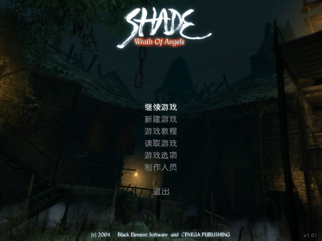
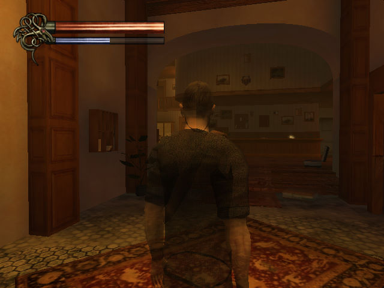

名稱：鬼影鎮／鬼影／暗影：天使之怒 (Shade: Wrath of Angels，簡中版) 簡介：Black Element 2004年出品的動作冒險遊戲，由Cenega代理發行，2006年由歡樂星空 簡中化並代理發行。台灣由英特衛代理進口，但並未中文化 [待補]。   保護：無 備註：VirtualBox有略微破圖，但不影響遊戲，在意的話，虛擬機可改用VMware。 備註：簡中版需在簡中系統上執行，否則會顯示亂碼。

